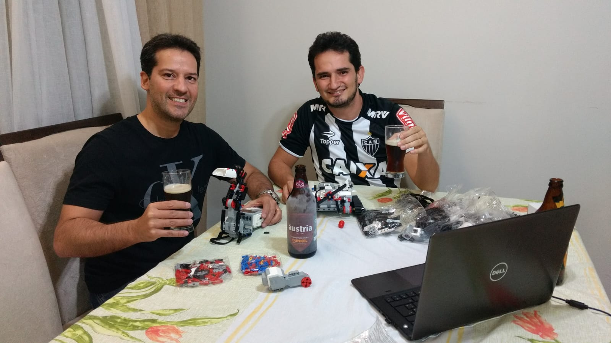

(Acima temos uma foto da equipe atual.)
A equipe foi criada no dia 21 de Maio de 2017, por dois professores
do Instituto Federal de Minas Gerais, do campus Sabará.
Bruno e Daniel estavam tomando cerveja enquanto
conversavam. Eles tinham um kit de robô, então durante a conversa decidiram aprender sobre e levar para a
escola. Em um fim de tarde montaram um robô com o kit do EV3 educacional e assim surgiu a Athena! A segunda
equipe de Sabará a ser criada!

Temporada 2017/2018 | Hydro Dynamics
Na temporada Hydro Dynamics, o desafio dos competidores foi pesquisar e apresentar
soluções inovadoras para um problema que atinge milhões de brasileiros e é também uma
preocupação mundial: a água. As pesquisas e soluções abordaram temas variados, desde encontrar a
transportar, usar ou descartar o líquido.
Essa foi a primeira participação da equipe ATHENA na competição, e, logo na primeira
participação, conseguiram ganhar o prêmio de 2º lugar no projeto de pesquisa. O projeto da equipe
abordava o descarte inadequado do óleo de cozinha na água.
Temporada 2018/2019 | Into Orbit
O tema da temporada 2018/2019, que pode ser traduzido como "Em órbita", desafiou os
estudantes a pesquisar sobre questões relacionadas a viver e viajar no espaço. Eles tiveram de
identificar e propor uma solução inovadora para um problema físico ou social enfrentado durante as
viagens de exploração espacial. Na arena, os robôs tiveram de cumprir missões como se locomover em áreas com crateras, ajudar um astronauta a
voltar em segurança para a base espacial e mover satélites para a órbita.
Neste ano a equipe enfrentou algumas dificuldades com faltas de peças e recursos para
desenvolvimento e montagem do robô. O projeto de pesquisa foi desenvolvido em parceria com uma
empresa que trabalho com realidade virtual. A equipe desenvolveu uma rede social familiar contendo
conteúdos em 3D. O objetivo era que os familiares gravassem momentos importantes do dia-a-dia
(aniversário do filho, jogo de futebol, show, et) para que os astronautas se sentissem mais
próximos/presentes no momento. O prêmio conseguido pela equipe na temporada 2018/2019 foi
“Contra todas adversidades”. Esse é um prêmio representa uma equipe que conseguiu um bom
desempenho mesmo após enfrentar muitas dificuldades durante o percurso.
Temporada 2019/2020 | City Shaper
Na temporada 2019/2020, City Shaper, os estudantes ajudaram a solucionar problemas nas
cidades, vilas e lugares, construindo cidades inteligentes e sustentáveis. Eles tiveram de identificar e
propor uma solução inovadora referente a arquitetura de cidades. Na arena, os robôs feitos pelos
próprios alunos com peças de Lego ainda tiveram de cumprir missões como ajudar uma cadeirante,
liberar o congestionamento nas vias, colocar água nas árvores, etc.
Esse foi o ano com o melhor desempenho da equipe, uma vez que a equipe foi vice-campeã da
etapa regional de MG e foi classificada para a etapa nacional que aconteceu em São Paulo. O projeto
de pesquisa desenvolvido pela equipe nessa temporada foi o THEMIS. A solução visa trazer
informações para que os deficientes visuais consigam utilizar o transporte público de forma mais
autônoma.
(a quarta foi na pandemia, não temos muitos registros)
Temporada 2021/2022 | Cargo Connect
O tema da temporada 2021/2022 foi Cargo Connect e foi focada no desenvolvimento de
projetos ligados ao transporte e logística. Ela desafia jovens a repensar um caminho a seguir e inventar
o futuro do transporte. O projeto de pesquisa desenvolvido pela equipe nessa temporada foi a criação
da plataforma PEGASUS. A plataforma visa mudar a forma como é realizada a coleta de resíduos
recicláveis. A ideia é que os próprios entregadores de encomendas possam recolher os resíduos
recicláveis.
Temporada 2022/2023 | Super Powered
Nessa temporada, SUPERPOWERED, as equipes deveriam desenvolver um projeto de inovação
com foco em explorar de onde vem a energia e como ela é distribuída, armazenada e usada. O projeto
de pesquisa da equipe, nomeado APOLO, visa amenizar o problema da sujidade nas placas
fotovoltaicas. A equipe Athena teve um excelente resultado, alcançando a premiação de 1º lugar na
categoria Projeto de Inovação e ficando como 3ª equipe excedente para ir à etapa nacional em Brasília
- DF.
Temporada 2023/2024 | MasterPiece
Nomeada de MASTERPIECE, a temporada 2023/2024 do FIRST LEGO League Challenge desafiou os
estudantes a explorar como o teatro, cinema, música e design unem as pessoas e permitem criar o
futuro. As equipes deveriam colocar em prática sua criatividade para usar a ciência, tecnologia,
engenharia, artes e matemática (STEAM) para inspirar grandes ideias. Nessa temporada a Athena
desenvolveu um projeto de releitura de obras de arte para dar possibilitar que as pessoas com alguma
deficiência visual sintam a sensação trazida pelas pinturas através dos sentidos de audição e tato. No
desafio da mesa a equipe teve um bom desempenho, ficando em 13º lugar de 50 equipes inscritas.